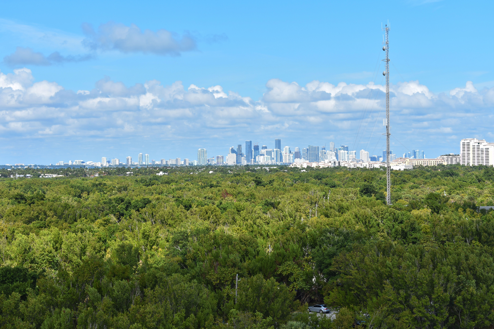
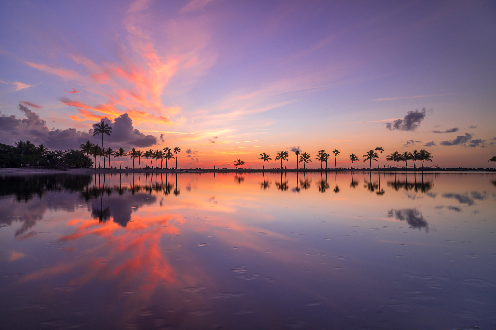

John Pennekamp Coral Reef State Park
El único arrecife de coral vivo en los EE.UU. continentales. A 90 minutos de Miami. The only living coral reef in the continental US. 90 minutes from Miami.
A nueve metros bajo la superficie, el silencio es absoluto. Estás rodeado de colores que no tienen nombre en ningún idioma — coral azul, esponja naranja, pez loro verde neón. El arrecife de Pennekamp no es solo el primero de los EE.UU.: es una lección de lo que el planeta puede hacer cuando nadie lo interrumpe.
Nine meters below the surface, the silence is absolute. You're surrounded by colors that have no name in any language — blue coral, orange sponge, neon-green parrot fish. Pennekamp's reef isn't just America's first — it's a lesson in what the planet can do when nobody interrupts it.
de arrecife de coral protegido — el primero en ser declarado parque submarino en los EE.UU.
of protected coral reef — the first to be declared an underwater park in the US
Galería
Gallery
-
-

-

-
¿Cuánto sabes del arrecife de Pennekamp? How much do you know about Pennekamp Reef?
5 preguntas · 2 minutos · Aprende algo nuevo 5 questions · 2 minutes · Learn something new
¿Qué puedes hacer aquí? What can you do here?
Buceo y Snorkel Diving & Snorkeling
- Cristo del Abismo — 8m de profundidad Christ of the Abyss — 8m deep
- Grecian Rocks — ideal para snorkel Grecian Rocks — ideal for snorkeling
- Molasses Reef — biodiversidad excepcional Molasses Reef — exceptional biodiversity
- Barco hundido City of Washington Shipwreck City of Washington
Kayak / Canoa Kayak / Canoe
- Mangrove Wilderness Trail — 2.5mi Mangrove Wilderness Trail — 2.5mi
- Rutas entre manglares marcadas Marked mangrove routes
- Alquiler disponible en el parque Rentals available in the park
- Tours guiados con guía naturalista Guided tours with naturalist
Glassbottom Boat Glass-Bottom Boat
- Tour de 2.5 horas desde el muelle 2.5-hour tour from the dock
- Vistas del arrecife sin mojarte Reef views without getting wet
- Salidas a las 9am, 12pm y 3pm Departures at 9am, 12pm and 3pm
- Reserva recomendada con anticipación Advance reservation recommended
Pesca Fishing
- Pesca en muelle — sin licencia requerida Dock fishing — no license required
- Pesca desde kayak permitida Kayak fishing allowed
- Especies: snapper, grouper, tarpon Species: snapper, grouper, tarpon
- Se prohíbe pescar en zona de arrecife Fishing prohibited in reef zone
Antes de ir — lo que necesitas saber Before you go — what you need to know
🎒 Qué llevar What to bring
- 🤿 Equipo de snorkel o alquílalo en el parque (~$15) 🤿 Snorkel gear or rent it in the park (~$15)
- ☀️ Protector solar mineral (no oxibenzona — protege el coral) ☀️ Mineral sunscreen (no oxybenzone — protects coral)
- 💧 Agua y snacks (no hay restaurante en el parque) 💧 Water and snacks (no restaurant in park)
- 👟 Sandalias o acuáticas 👟 Sandals or water shoes
- 📸 Cámara acuática o bolsa waterproof 📸 Waterproof camera or bag
- 💵 Efectivo o tarjeta para alquiler de equipo 💵 Cash or card for equipment rental
⚠️ Reglas importantes Important rules
- 🪸 Prohibido tocar el coral — puede morir al contacto 🪸 Touching coral is prohibited — it can die on contact
- 🚫 No usar protector solar con oxibenzona 🚫 Don't use oxybenzone sunscreen
- 🐠 No colectar ni llevarte nada del parque 🐠 Don't collect or take anything from the park
- ⚓ Barcos deben usar boyas de amarre ⚓ Boats must use mooring buoys
- 📵 Señal limitada en el agua 📵 Limited signal on the water
📅 Cuándo ir When to go
Información práctica Practical information
Entrada Entry fee
$8/persona Kayak y snorkel $4 extra · Camping: $26–$37/noche Kayak & snorkel $4 extra · Camping: $26–$37/nightHorarios Hours
8am–sunset Centro de visitantes cierra antes Visitor center closes earlierCómo llegar Getting there
~90min desde Miami ~90min from Miami US-1 South hasta MM 102.5 (Key Largo)Mejor época Best season
Nov – Abr Visibilidad óptima · agua más fría Optimal visibility · cooler waterTip local Local tip
Reserva el glassbottom boat con días de anticipación. Para snorkel, Grecian Rocks es el spot más accesible y con mayor densidad de peces. Book the glass-bottom boat days in advance. For snorkeling, Grecian Rocks is the most accessible spot with the highest fish density.Miles de buceadores visitan esta página cada mes Thousands of divers visit this page every month
Alquiler de equipo, tours de buceo, glassbottom, guías de pesca — si tu negocio está en Key Largo, tus clientes ya están aquí buscándote. Equipment rental, diving tours, glass-bottom, fishing guides — if your business is in Key Largo, your customers are already here.